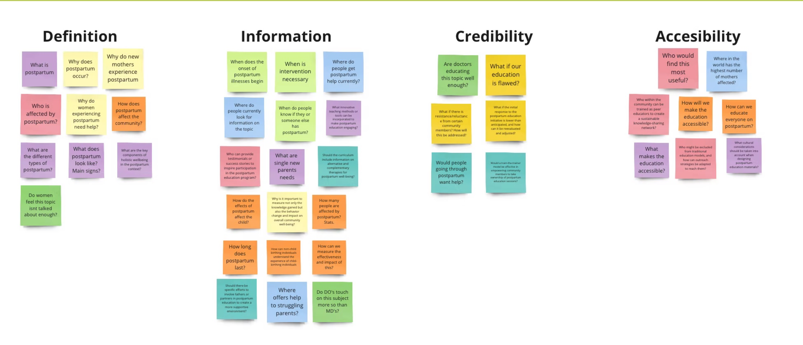
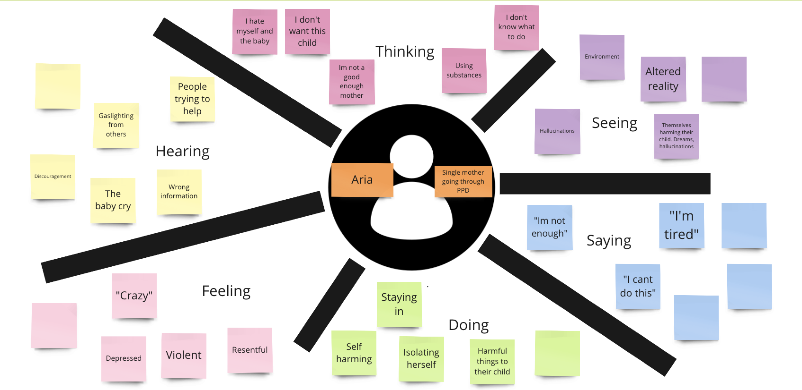
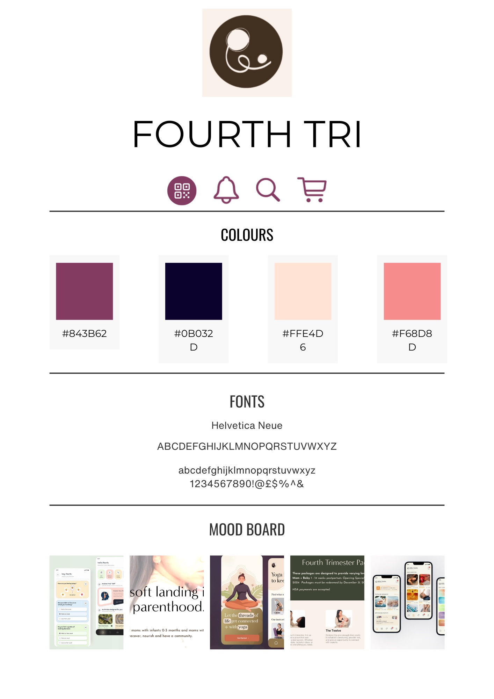
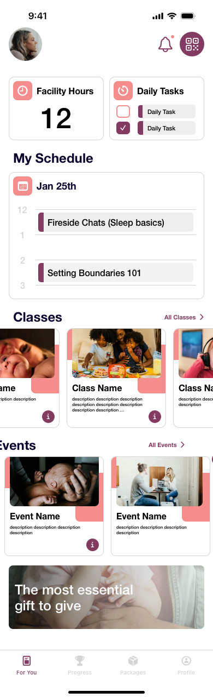
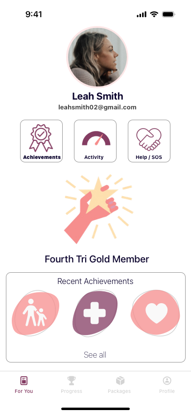
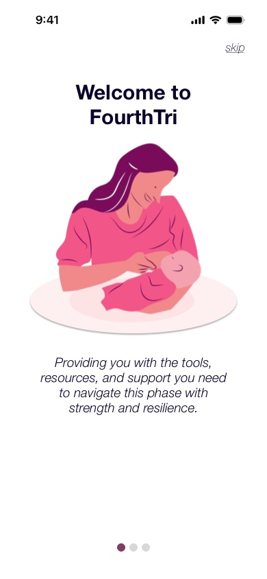

04 — Health & community
Fourth Tri
An app that connects new mothers with Fourth Tri's in-person postpartum centre — booking classes, tracking progress, earning achievements, and getting support during the fourth trimester.

04 — Health & community
An app that connects new mothers with Fourth Tri's in-person postpartum centre — booking classes, tracking progress, earning achievements, and getting support during the fourth trimester.
I opened with a question map — everything we didn't know, sorted into definition, information, credibility, and accessibility. It surfaced the questions that actually mattered: where do people currently look for postpartum help? Who might be excluded from traditional education models? What if our education is flawed?
Then I built an empathy map around Aria, a single mother going through postpartum depression. This is the artifact that set the project's seriousness. Mapping what she is thinking, seeing, saying, hearing, feeling and doing put words on the page that no feature list would have produced — "I'm not enough." "I can't do this." "I'm tired." — next to behaviours like isolating herself and staying in.


The postpartum period — the "fourth trimester" — is one of the most physically and emotionally demanding phases of a mother's life. Yet postpartum depression remains widely underdiagnosed, and new mothers often lack accessible, non-judgmental support.
Many feel isolated, overwhelmed, and unsure where to turn. The resources that do exist are fragmented, hard to find, and rarely feel personal — written for a general audience at a moment when someone needs to feel specifically seen.
Fourth Tri already ran a physical centre doing this work well. The gap was the other 23 hours of the day. My brief was to bridge the distance between the centre and the daily lives of the mothers it serves.
A mother in crisis will not navigate a menu. Whatever help this app offers has to be reachable in one tap, from anywhere.
Two constraints shaped this: no AI, and four weeks. No AI ruled out the obvious 2020s answer — a chatbot companion — and I think it made the product better. A woman who has been gaslit by people around her, as the empathy map showed, does not need a machine performing empathy at her. It forced every support mechanism to route toward a real human at a real facility.
Four weeks ruled out breadth. I chose to build the daily loop properly — what's on today, what have I done, how do I get help — rather than sketch a wider product shallowly.

A comforting blush-and-plum palette and a straightforward, unfussy typeface. This is a tone decision with a functional purpose: medical aesthetics signal diagnosis, and a woman who is already afraid something is wrong with her does not need an interface that agrees. Warmth here is the difference between "you are a patient" and "you are welcome."
Members buy time at the centre, so the dashboard leads with how many hours remain — a plain number, top left, before anything else. It answers the question that governs whether she comes in this week, and removes the need to ask a staff member, which is exactly the kind of small friction that stops someone from showing up at all.
Help / SOS sits in the top row of the profile screen, given equal visual weight to Achievements and Activity, connecting the user directly to emergency support. It is not buried in settings and it is not styled as an alarm. Both choices are deliberate: buried means unreachable in the moment it's needed, and alarming means she won't press it in front of anyone. It reads as a normal, available option — which is the only way it gets used.
Mom + Baby, Healing, Self love, Out n' about, Stretch, Zzzz, Harmony, Togetherness. The achievements are built around attending classes and spending time in the facility — because the intervention that works here is community, and the thing the product can actually influence is whether she walks through the door. Notably, none of them reward anything about the baby's progress or the mother's productivity. They reward her being there.



Both changes that came out of testing were about money and community — and both came from the centre's side of the relationship, which I hadn't weighted heavily enough in the first pass.
Showing a mother her hours were running low and then making her call or visit to top up was a dead end I'd built myself. If the dashboard raises the question, the app has to be able to answer it.
This one reframed the audience. New mothers are frequently not the ones who can spend right now — but their friends, partners, and family are actively looking for something useful to give. Letting a third party buy hours turns "I don't know how to help" into a real intervention, and gets a mother into the building who might not have paid her own way in.
Artifact slot — testing
Usability session notes, or the purchase/gifting flow screens added after this round.
I presented the work to the owners and managers of the Fourth Tri facility — the people who would have to live with it.
"Your app is a game-changer for new mothers dealing with postpartum depression. It's user-friendly, supportive, and the attention to detail is evident throughout."
Fourth Tri facility owner / manager
"I'm loving the vibe and how it brings moms together. It's super user-friendly — maybe adding some fun features could keep users even more engaged."
Fourth Tri facility owner / manager
"Really helpful for new moms. I like how it's easy to use and has good info. Maybe think about adding more to make it accessible for everyone."
Fourth Tri facility owner / manager
The note I'd act on first is the last one — accessibility. Two separate reviewers raised reach: making it work "for everyone." That lines up with a question from my own opening research that I never fully answered — who might be excluded from traditional education models, and how can we adapt outreach to reach them? A four-week build let me design the daily loop well; it didn't let me design for the mothers least likely to walk in the door on their own. That's the next version.
Next project
Sales Qube →